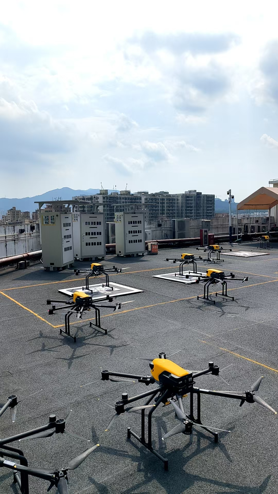

01Apr – Aug 20262026.04–08
Meituan Drone美团无人机
AI Product Management Intern · International CommercializationAI 产品经理实习生 · 海外商业化
Drone Delivery Economics in the Middle East中东无人机配送的商业可行性评估
I assessed the commercial feasibility of drone delivery in the Middle East by connecting station operations and cost per delivery to deployment decisions.我负责评估中东无人机配送的商业可行性，把自动化机场的运营参数和单均成本纳入部署决策。
- Built a unit economics model and led development of a dispatch simulator to assess how station capacity and the share of orders served by drone affected cost per delivery.搭建单均经济模型，主导开发调度仿真工具，测算不同订单渗透率和站点容量下的单均配送成本。
- Quantified 13 cost-saving opportunities and delivered the simulator, cost model and deployment playbook to the international team for planning in Dubai and Riyadh. The plan targeted a cost reduction of about 15%.量化 13 个降本机会，向海外团队交付仿真工具、成本模型与部署手册，支持迪拜和利雅得的部署规划。方案降本目标约为 15%。
